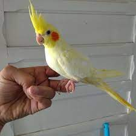
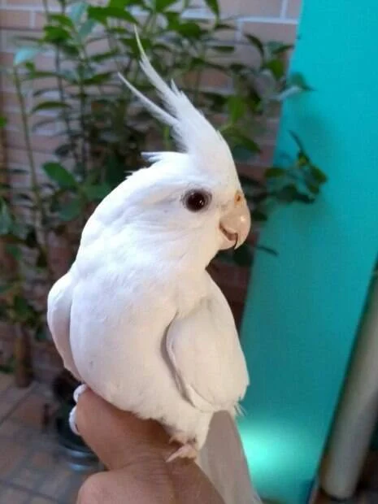
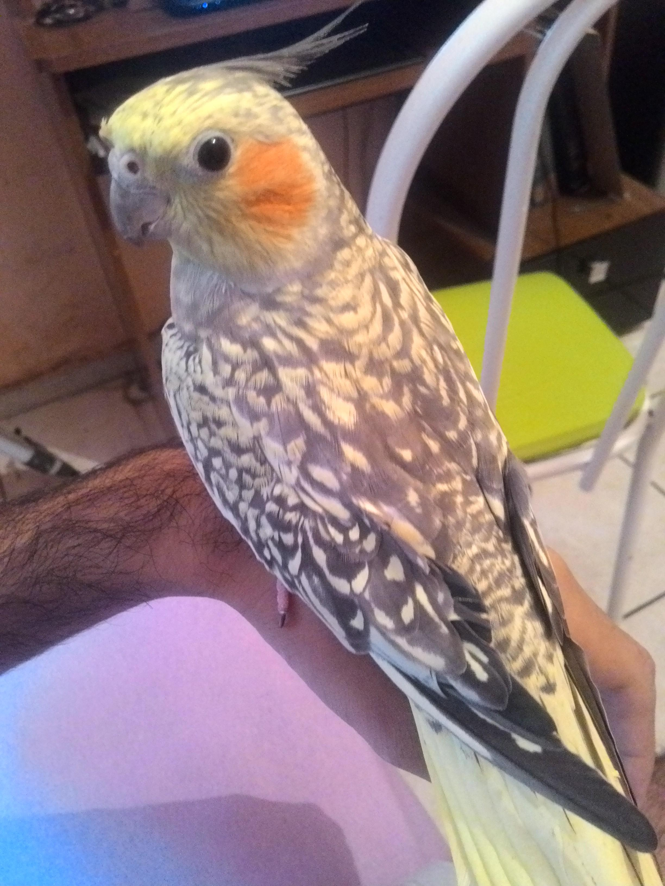
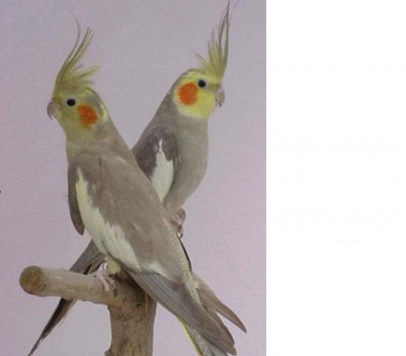
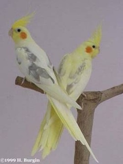

As mutações de calopsita são variações genéticas que afetam a aparência física dessas adoráveis aves. Elas ocorrem naturalmente ou podem ser criadas por criadores especializados. Cada mutação resulta em características únicas, tornando as calopsitas verdadeiras obras de arte da natureza.
Uma das mutações mais conhecidas é a Lutino, que apresenta penas amarelas, olhos vermelhos e bochechas laranjas. Já a ,Albina é uma variante do Lutino, com plumagem branca e olhos vermelhos. Outra mutação fascinante é a Pérola, que exibe pequenas manchas claras nas penas.
  As calopsitas podem apresentar mutações combinadas, gerando uma diversidade ainda maior de cores e padrões. A Canela, por exemplo, é uma mutação recessiva que resulta em um tom mais amarronzado nas penas.
Além das mutações de cor, existem variações de penas, como a Arlequim, que apresenta um padrão mesclado, e a Cara Branca, que tem uma face predominantemente branca, sem as bochecas laranjas.

É importante lembrar que, embora sejam belas, algumas mutações podem trazer problemas de saúde. Criadores responsáveis devem garantir a qualidade de vida e bem-estar dessas aves encantadoras.
Nesse website, você poderá encontrar informações detalhadas sobre as diversas mutações de calopsitas, suas características e cuidados específicos para cada uma delas. Aproveite para aprender mais sobre essas maravilhosas aves e como apreciar sua beleza única!
A alimentação adequada é fundamental para manter a saúde e o bem-estar das calopsitas. Essas aves são naturalmente granívoras, ou seja, sua dieta é baseada principalmente em sementes. No entanto, para garantir uma dieta balanceada e nutricionalmente completa, é importante oferecer uma variedade de alimentos.
A base da alimentação das calopsitas deve ser composta por uma mistura de sementes própria para pássaros. Essa mistura geralmente contém sementes de girassol, milheto, alpiste, aveia e outras variedades. Entretanto, é essencial ficar atento à qualidade da mistura, garantindo que seja fresca e livre de mofo.
Além das sementes, é recomendado complementar a dieta das calopsitas com frutas frescas e legumes. Elas apreciam maçãs, peras, melão, milho verde, cenoura e folhas verdes, como espinafre e couve. É importante lavar bem as frutas e legumes antes de oferecê-los às aves.
Os suplementos vitamínicos também podem ser úteis para garantir que a calopsita receba todas as vitaminas e minerais necessários para uma saúde ótima. No entanto, é fundamental consultar um veterinário especializado em aves antes de administrar qualquer suplemento.
Evite oferecer alimentos nocivos à saúde das calopsitas, como chocolate, cafeína, álcool, abacate e cebola. Além disso, evite dar alimentos processados ou com alto teor de sal e açúcar.
Mantenha sempre água limpa e fresca disponível para as calopsitas, trocando-a diariamente.
Lembre-se de que a quantidade de comida oferecida deve ser adequada ao tamanho e nível de atividade da ave. Observe seus hábitos alimentares e ajuste a quantidade conforme necessário.
Ao oferecer uma dieta balanceada e variada, você estará proporcionando à sua calopsita uma vida mais saudável e feliz. Além disso, visite regularmente um veterinário especializado para garantir a saúde e o bem-estar contínuos de sua ave de estimação.
Bem-vindo ao nosso website dedicado a brinquedos seguros para calopsitas! Aqui você encontrará informações valiosas sobre como proporcionar diversão e enriquecimento para suas adoráveis aves de estimação.
Os brinquedos são essenciais para o bem-estar das calopsitas, pois estimulam sua mente, promovem o exercício e ajudam a evitar o tédio. No entanto, é importante escolher brinquedos seguros e adequados para essas aves sensíveis.
Ao selecionar brinquedos para suas calopsitas, leve em consideração o tamanho, a resistência e os materiais utilizados. Brinquedos pequenos demais podem ser engolidos, representando um risco de asfixia. Certifique-se de escolher opções duráveis e feitas de materiais atóxicos.
Alguns exemplos de brinquedos seguros e divertidos para calopsitas incluem:
Lembre-se de sempre inspecionar os brinquedos regularmente em busca de danos ou partes soltas, substituindo-os quando necessário. Além disso, ofereça uma variedade de brinquedos para manter o interesse e a diversão de suas calopsitas.
Neste website, você também encontrará dicas sobre como introduzir os brinquedos gradualmente e como observar o comportamento de suas calopsitas para garantir que estejam desfrutando de uma experiência segura e enriquecedora.
Cuide do bem-estar de suas calopsitas, proporcionando-lhes brinquedos adequados e seguros, e aproveite momentos de alegria e interação com suas aves de estimação encantadoras!
....
// Abre em uma nova janela ou aba google.com // Abre na mesma janela google.com // Abre o cliente de e-mail padrão do usuário Email User // Leva a outro arquivo local no mesmo site Link to page section // Este link externo abre em uma nova janela ou aba // Aqui utilizamos uma imagem ao invés de texto